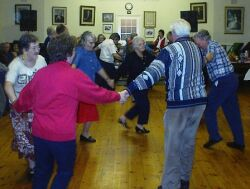

Les vielles danses Nouormandes et autres d'aut'fais étaient bein connues dans l's Îles, comme dé raiethon. Mais, ch'est tout pèrdu ichîn à ch't heu, ou à bein près. Nouos vielles gens né dîthaient pon "danser", mais dancher. Et dans nouot' janne temps eune grand-tante à nous, du côté paternel, nouos dîthait qué san pépèe, nouot' grand-grand-péthe, prononçait aînchîn ; ch'tait d'même tch'il dithait.

Véthe, hélas, "Lé temps apporte, emporte, mais né rapporte pas", et pon seulement les vielles moeurs et manniéthes et couôteunmes, mais l'esprit et tout chein tch'en dépendait et tch'en r'sourdait est hors. Ouaithe tch'i' saient oubliées, né v'chîn les noms dé deux'trais d'ches danses, né sait-che qué pouor les r'corder ensembl'ye.
À part des quadril'yes qué nouos vielles gens connaîssaient bein et tch'il' app'laient étout des contrédanses, y'avait les ménuets, la polka, la polonnaîthe, les royelles (dancher les royelles, comme il dithaient), la schottise (dancher eune schottise) qué cèrtains prononçaient la châtise ou châtithe, la gaillarde, lé rigodon, ou la danse du rigodon (dancher un rigodon), lé cotillon ou la danse au cotillon, la danse du galop, lé pas à deux, la note à huit, la note à trais, la note dé Mèrgoton ou la Mèrgoton, eune ronde danse, et cétéra. Et i' dansaient la ronde "Ha, man bieau laurier!”, et "Doubl'ye, doubl'ye, la violette", "Après six heures...", et cétéra.
Cèrtains dansaient étout, bein seux, les rondes du Dgiâbl 'ye! Et les cheins tchi s'prêtaient à danser ch'la, les rondes du Dgiabl'ye, étaient les gens du grand sang. Et don, ches danses-là étaient censées êt' les cheinnes des chorchièrs et autres au sabbat.
Viyiz étout: